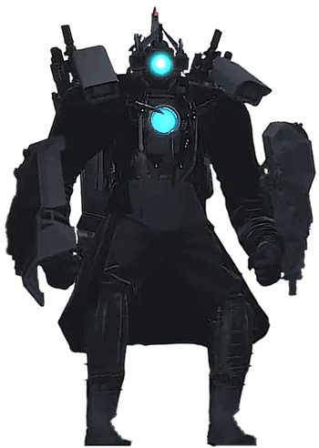
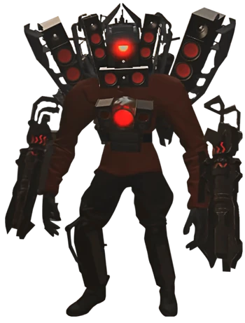
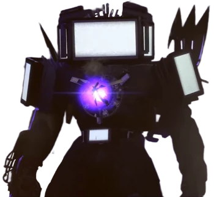
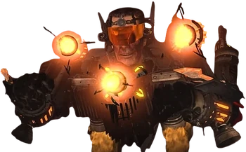

🌟Titans are one of the strongest characters in the skibidi universe. This table shows the info of the character. Take note that this table will show the original titans while the lower will show the rest.
| Name | Apperance | Abilities | Rank | Current State | Relation |
|---|---|---|---|---|---|
| Titan Cameraman |  | -Core blast(Fire) -Railgun -Shoulder gun/laser -Sheild -Hammer -Improved jetpack -Magnetic hand -Finger gun |
Leader | Extremly damaged | Ally |
| Titan Speakerman |  | -Core blast(laser) -Dual blasters -Speakers -Agility -Jetpack -Blades |
Leader | Upgrading | Ally |
| Titan TV Man |  | -Absorptive core -Core blast(laser/healing) TV screen colours(Red: Suicidal, Purple: Hypnotic, Orange: Burning, Black: Absorption, White: Blinding, and Blue: Brainwash) -Detachable tv heads with laser -Shoulder claws -Sword -Sheild |
Leader | Insanely damaged | Ally |
| G-Titan |  | -Core laser and orb -Cannon arms -Shoulder cannons -Sheild -Improved jetpack |
Leader | Alive | Ally(Enemy in au and before astro arc(ep75)) |
| Astro Leader | N/a | N/a | Leader | Alive | Enemy |
🌟Here are the list of titans in other universes.
| Name | Race |
|---|---|
| Titan clockman | Clock |
| Titan Drillman | Drill |
| Titan Pencilwoman | Pencil |
| Titan Sonar Man | Microphone |
| Titan Computerman | Computer |
| Tri-Titan | N/a |
| BONUS: 💩poop titan💩 | idk? |
Sources: Titan-Cameraman-Speakerman-Tvman